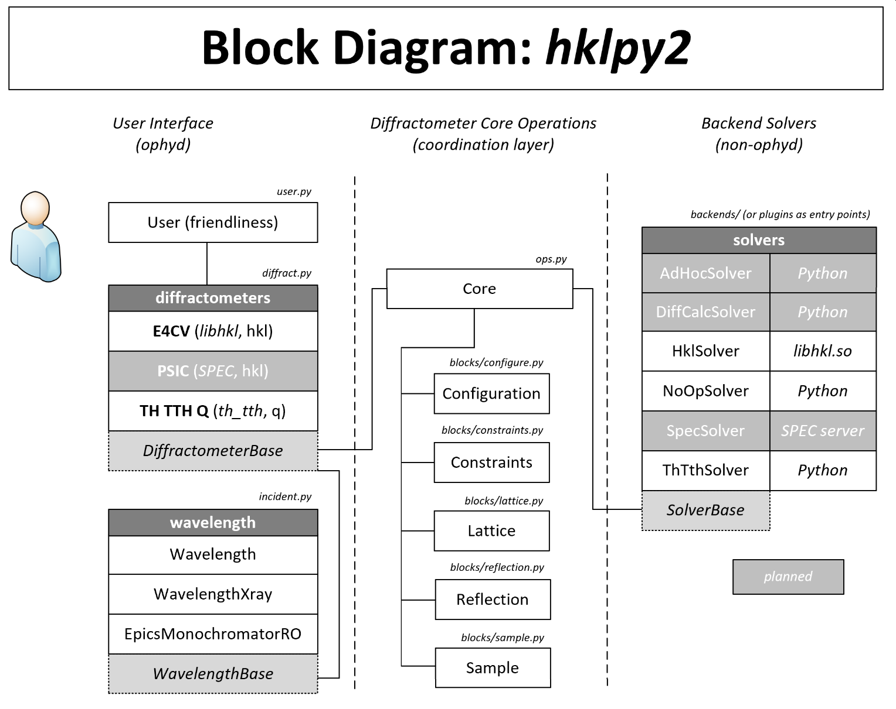

Design for hklpy2#
Gather the discussion points, thoughts, issues, etc. for development of hklpy2, the second generation of the hklpy package.
Here’s a block diagram of the new API:

hklpy release v2.0 project#
As stated in the project:
Redesign of the Diffractometer object.
user-requested changes
move libhkl to be a replaceable back-end computation library
easy to save/restore configuration
easy to use different engines (such as
hkl,qper_qpar,emergence, …)user can choose different names for any of the diffractometer axes
Design ideas (from 2020 RFP)#
This is a starting format for suggestions, but it may become clear that a different format to describe our requirements is necessary.
Default diffractometer geometries
Bragg Peak optimization tools
Defining orientation matrix or matrices
Simulating diffraction and diffractometer modes
Built in reciprocal space plans (or scans)
Choice of calculation engines other than the hkl C package
Review of terminology coordinate systems#
\(B\) goes from hkl to an orthonormal basis in the crystal reference frame
\(U\) goes from the crystal reference frame to the reciprocal lab frame (expressing how the crystal is stuck onto the diffractometer)
Solving the diffractometer equation goes from the reciprocal lab frame to diffractometer angles. (Some people loosely call this “real space” but perhaps they shouldn’t. It’s angles.)
Desired API#
The desired “solver API” into the HKL computation code should be transformations from reciprocal space to diffractometer angle space and vice versa, each taking three arguments:
a structure (dict or struct) describing a geometry (motors, reference positions, and constraints)
observed mapping between real and reciprocal space to give you the “U” of the UB matrix
the crystallography to give you the “B”
Underneath this API could be many different solvers:
custom project
pybind-wrapped components from
libhklSPEC
It should be easy to switch between solvers at run time so that new things can be validated.
Support for Additions#
-
Perhaps everything is already in place to support these items as stand alone ophyd objects. Here is what’s needed:
[ ] Identify if we are missing items to support analyzers or polarizers
[ ] Make sure we don’t over specify requirements to cause problems for analyzers or polarizers
[ ] Do we need to tie these new ophyd objects together with diffractometer object? What is the best way to do that?
Make it easy to provide additional axes, such as for:
rotation about arbitrary vector
Solvers with different reciprocal-space axes
extra parameters, as required by solver (For example, see
emergencemode in E4CV)
Reflections#
Other#
Sources#
As listed in hklpy issues:
(2020) Requirements RFP
(2020) requirements
See above section Design ideas (from 2020 RFP) for a copy of the collected requirements.
Additional Solvers#
As listed in hklpy issues.
Python entrypoints#
Could be used for backend solvers
It provides an useful tool for pluggable Python software development.
Article with example about entrypoints.
Demo (9 years old)
See the docs in setuptools regarding Entry Points for Plugins.
Differences between hklpy v1 & hklpy2 v2#
hklpy v1#
Depends on libhkl:
Only compiled for linux-x86_64
Difficult to modify existing (or add additional) diffractometer geometries.
All samples, lattices, & reflections are stored by the libhkl library.
Multiple layers (diffractometer, calc, engine, sample), based on libhkl design.
Layer design is confusing as to where a feature is implemented.
Users are often tempted to dig into lower layers for features.
Difficult to use additional diffractometer axes and parameters.
Uses libhkl as the defining reference for diffractometer data and operations.
hklpy2 v2#
Samples, lattices, & reflections stored in Python.
Separate the roles of core and solver.
Core makes transactions with the selected solver.
For specific operations, solver is setup and then operated.
Refactor use of libhkl as a backend solver library.
Support additional backend solver libraries (installed as entry-points).
Simpler design.